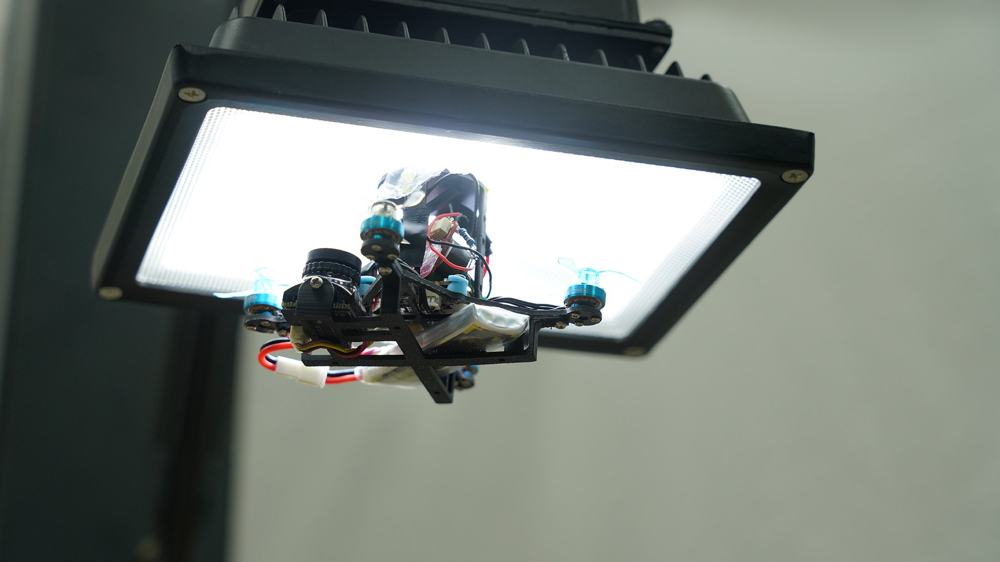
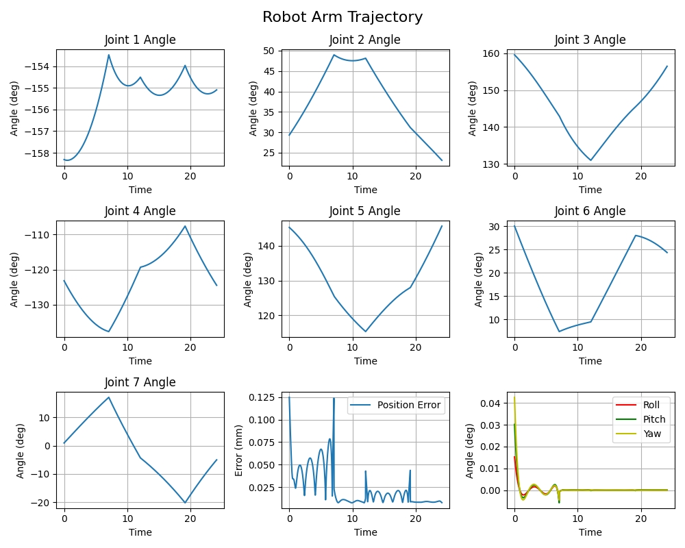
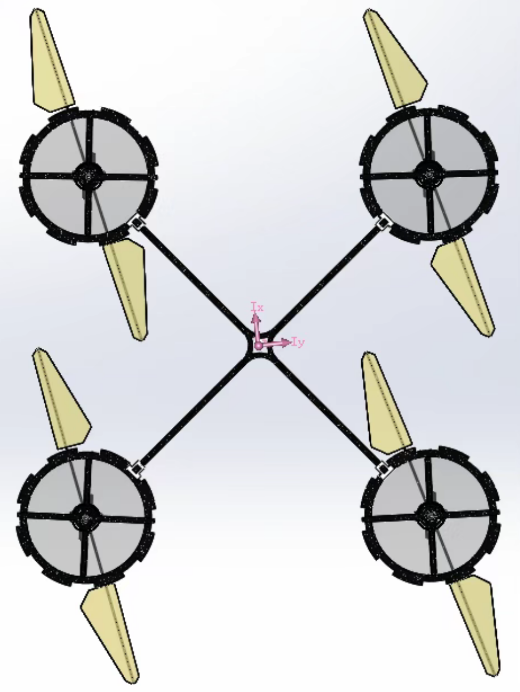
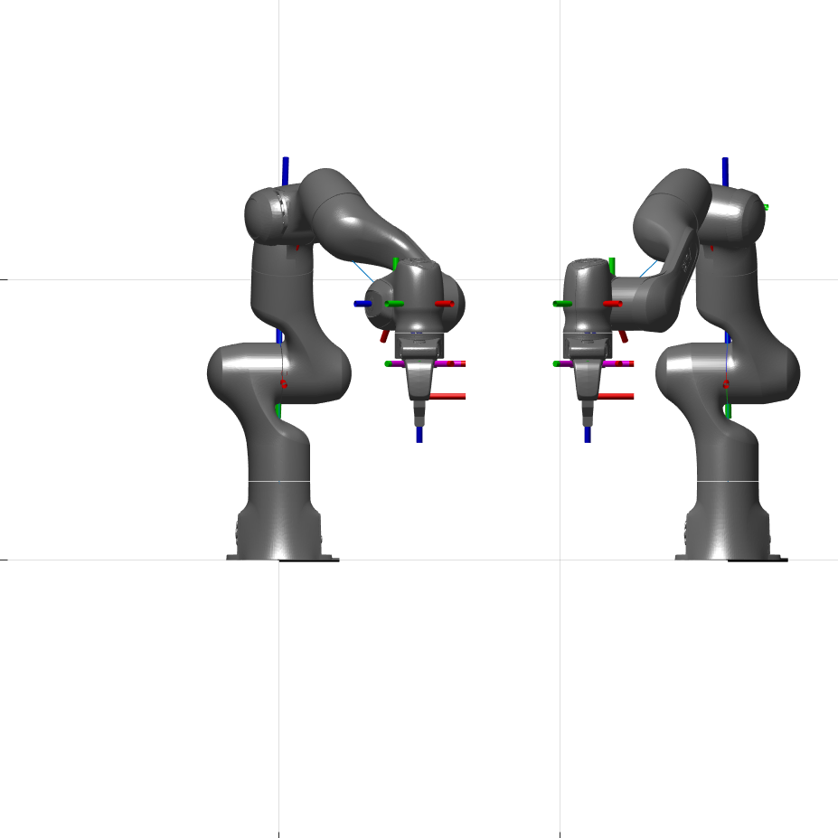
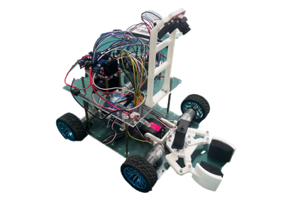

Flexible perching for a miniature UAV
A miniature UAV perching system using flexible adhesion, AprilTag visual servoing, and cascaded flight control, tested in simulation and hardware experiments.
Read project ↗Projects · 2024—2026
Projects in robot motion planning, flight control, and embedded systems.

A miniature UAV perching system using flexible adhesion, AprilTag visual servoing, and cascaded flight control, tested in simulation and hardware experiments.
Read project ↗
Kinematics and trajectory planning for a humanoid robotic arm, developed and tested in MuJoCo for subsequent hardware testing.
Read project ↗
Controller and simulator development for an ultra-lightweight drone powered by dielectric elastomer actuators.
Read project ↗Betaflight simulation and yaw planning for autonomous racing trajectories with the University of Toronto Aerospace Team.
Read project ↗
Monte Carlo workspace analysis with rigid coupling and inter-arm collision constraints.
Read project ↗
Line following, obstacle navigation, visual localization, and Bluetooth control on an embedded platform.
Read project ↗